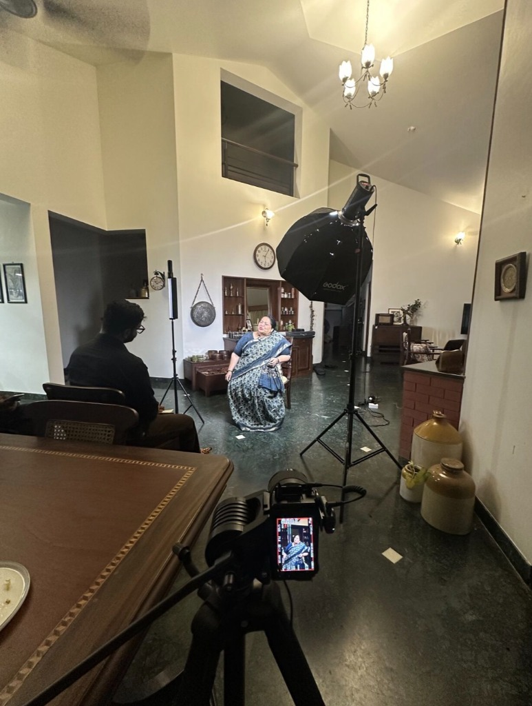
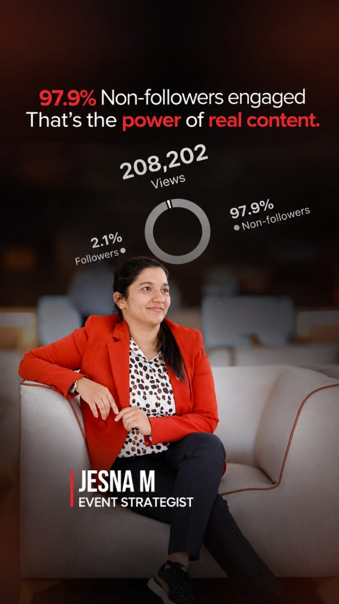
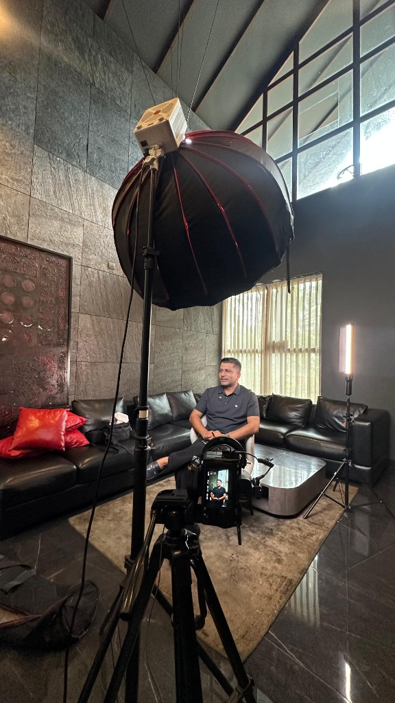
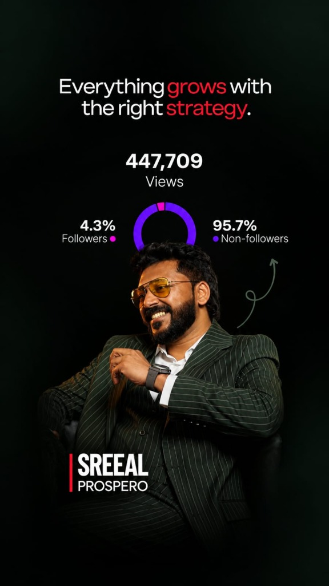
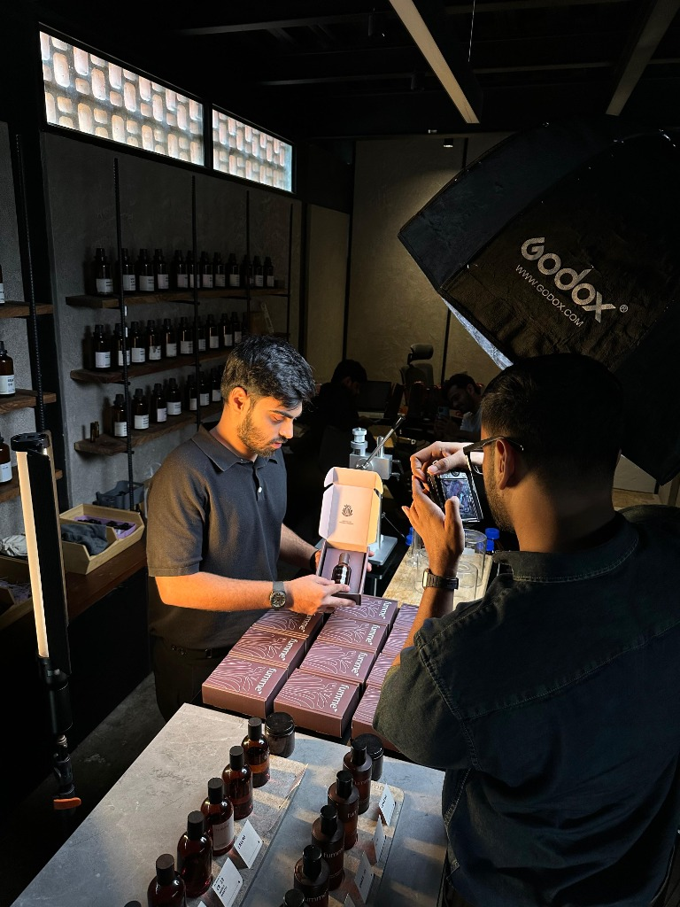
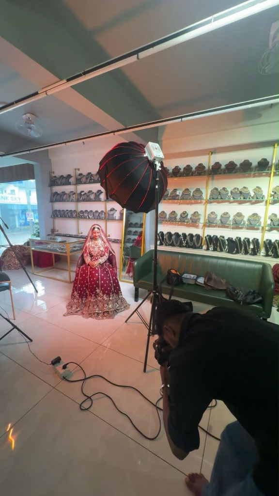
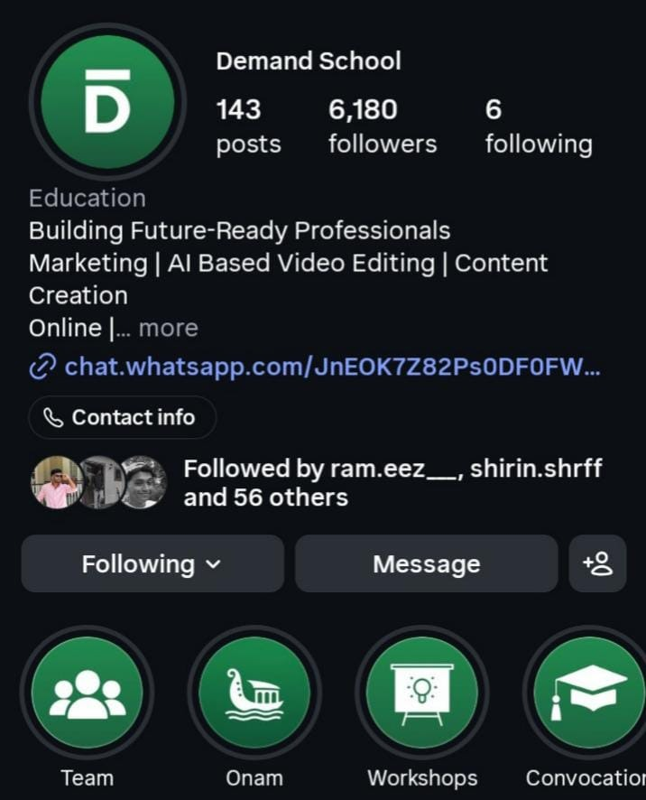
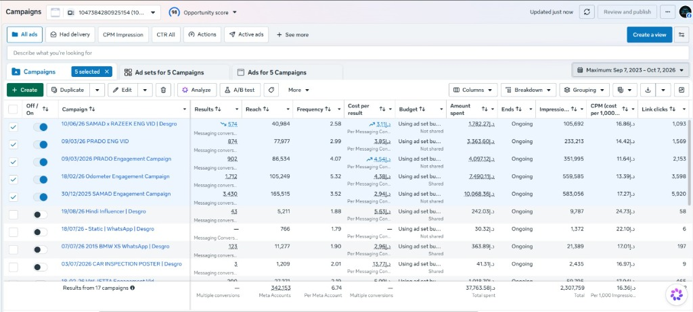
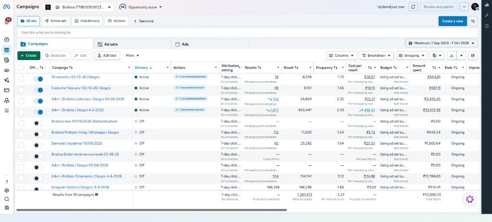

PORTFOLIO
HELLO!
I’m a Sales & Marketing Specialist with experience in content marketing, performance marketing, social media management, CRM, and client acquisition.
I completed my BBA from the University of Calicut and started my career in the education industry as an Academic Counselor at Audit Info Education Consultancy. This experience helped me build my communication and sales skills and taught me how to understand people's needs and guide them towards the right solutions.
Alongside my career, I started pursuing my MBA from Pondicherry University through distance education.
Later, I worked as a Performance Marketer at Aidway International for one year. This experience helped me understand how digital marketing can support business growth, improve brand visibility, and reach the right audience.
A major turning point in my career came when I joined Desgro Media as a Sales & Marketing Executive. Since Desgro is a service-based marketing company, sales was not simply about selling a service. Before offering a solution, I worked on understanding each client's business, challenges, target audience, competitors, and industry. Based on these insights, we developed customized marketing plans aligned with their business goals.
I was involved in preparing marketing plans, presenting proposals to potential clients, following up on opportunities, and maintaining client relationships throughout the process. This gave me the opportunity to work with businesses across different industries and understand their unique challenges.
At Desgro, I also got the opportunity to learn and work in client acquisition, digital marketing and content marketing, personal branding, company branding, marketing consultation, social media management, and production.
I am also passionate about production, editing, and constantly learning new techniques to improve my thinking and bring better ideas to my clients. I enjoy understanding businesses, identifying their challenges, and helping them grow through effective marketing strategies, engaging content, and data-driven campaigns.
This portfolio is a collection of my journey, experience, and the work I’ve done along the way.
What I'm good at
Work & Results
Personal Branding

Abida Rasheed
Took over the account at 180K+ followers and grew it to 300K+ as the SMM, handling overall social media strategy. Growth driven by consistency and quality content.

Jesna M Koya
Executed high-impact content strategy generating 208K+ views with 97.9% non-follower engagement, proving the power of organic reach and targeted messaging.

Noufal Poovanthodi
Created high-impact content that grew the account from 3K to 6K+ followers, driven by focused content strategy.

Sreelal Prospero
Structured personal branding and distribution strategy that achieved 447K+ views with 95.7% non-follower reach, driving substantial visibility and brand authority.
Company Branding

Fumme
Started from scratch, handling company branding and creative direction. Developed high-impact visuals to establish the brand presence.

Bridista
Started with company branding and expanded into creative content and paid advertising to drive marketing results.

Demand School
Managed social media from early stages. Brand completed 7+ batches and achieved 2.1M+ views in 90 days.
Performance Marketing

360 Car Experts
AED 3,900/mo ad spend generated ~950 leads, resulting in 40–50 confirmed bookings (AED 500 avg service value), proving high ROAS.

Bridista
₹13,000/mo ad spend generated 500–600 leads and contributed to ~₹3 lakh in revenue. Generated qualified bridal rental enquiries.